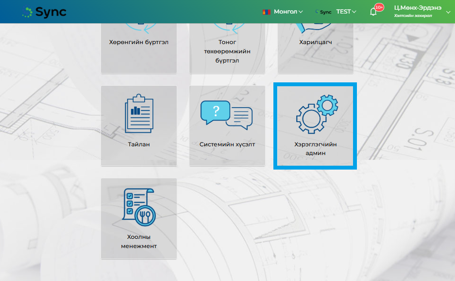

Хэрэглэгчийн админ модуль нь SyncERP системийг хэрэглэгч байгууллагын эрх бүхий ажилтан нь системд хандах бусад
ажилтнуудын системд хандах хэрэглэгчийг бүртгэх, системийн эрхүүдийг бүлэглэн эрхийн бүлэг зохион байгуулах,
хэрэглэгчдэд эрхийн бүлэг холбох үндсэн зориулалт бүхий модуль юм.
